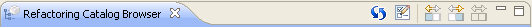

Catálogo de refactorizacionesCatálogo de refactorizaciones
Catálogo de refactorizacionesCatálogo de refactorizaciones
La vista Refactoring Catalog Browser dispone de una barra de herramientas que incluye las distintas acciones que se pueden llevar a cabo sobre esta. En este caso, nos encontramos con cinco botones que han sido distribuidos en dos grupos; el de la izquierda contiene dos botones independientes mientras que el de la derecha contiene tres botones con funcionalidad relacionada, estos últimos estarán siempre todos disponibles salvo uno de ellos que se encontrará deshabilitado.
En la siguiente ilustración se puede apreciar la barra de herramientas de la vista y acto seguido se detallará de forma ordenada la funcionalidad de cada uno de los botones que contiene.

Refrescar vista
Permite refrescar la vista con la finalidad de visualizar actualizado el catálogo de refactorizaciones. Esta funcionalidad es importante ya que la modificación de refactorizaciones puede realizarse por varias vías, por ejemplo por un cambio en su propia definición pero también podría ser por un cambio en una categoría a la que esta pertenece. Es por ello que es importante que el usuario tenga presente que cuando realice algún cambio que afecte a estas deberá utilizar esta funcionalidad para que la información que la vista muestre se encuentre actualizada.
Editor de clasificaciones
Permite abrir el editor de clasificaciones con el fin de visualizar la información asociada a las clasificaciones disponibles o realizar la edición de las mismas. Cuando este botón es pulsado se abrirá el editor de clasificaciones en la zona que Eclipse dispone para la visualización de editores. En caso de que este ya estuviese abierto se activará la pestaña correspondiente al editor, situándonos en él.
Mostrar panel izquierdo
Permite mostrar únicamente el panel izquierdo Classification Panel, destinado a la clasificación de refactorizaciones, disponiendo de todo el tamaño de la vista para su visualización. Además cuando este botón es pulsado se deshabilita y quedan habilitados los otros dos; Show right pane y Show all panes.
Permite mostrar únicamente el panel derecho Summary Panel, destinado a la visualización de la información asociada a una refactorización, disponiendo de todo el tamaño de la vista para su visualización. Además cuando este botón es pulsado se deshabilita y quedan habilitados los otros dos; Show left pane y Show all panes.
Mostrar todos los paneles
Permite mostrar tanto el panel izquierdo Classification Panel, destinado a la clasificación de refactorizaciones, como el panel derecho Summary Panel